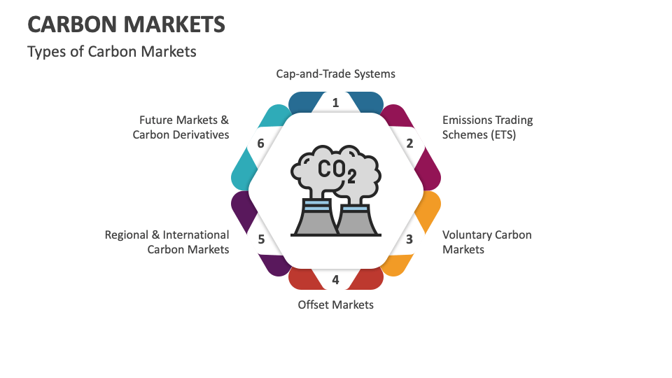

To define the Carbon Market: A carbon market is a system where carbon emission allowances or credits are bought and sold to incentivize the reduction of greenhouse gas emissions.
To define the Carbon Market: A carbon market is a system where carbon emission allowances or credits are bought and sold to incentivize the reduction of greenhouse gas emissions.

How Carbon Markets Work:
- Setting a Cap: Regulatory bodies establish a limit on total emissions for a company, sector, or region.
- Issuing Allowances: Entities receive or purchase allowances, each permitting the emission of one metric ton of CO₂ or equivalent.
- Trading: Companies that emit less than their allowance can sell surplus credits to those exceeding their limits, creating a financial incentive to reduce emissions
- Monitoring and Compliance: Emissions are measured and regulated, with penalties for exceeding allowances, ensuring the system drives real reductions